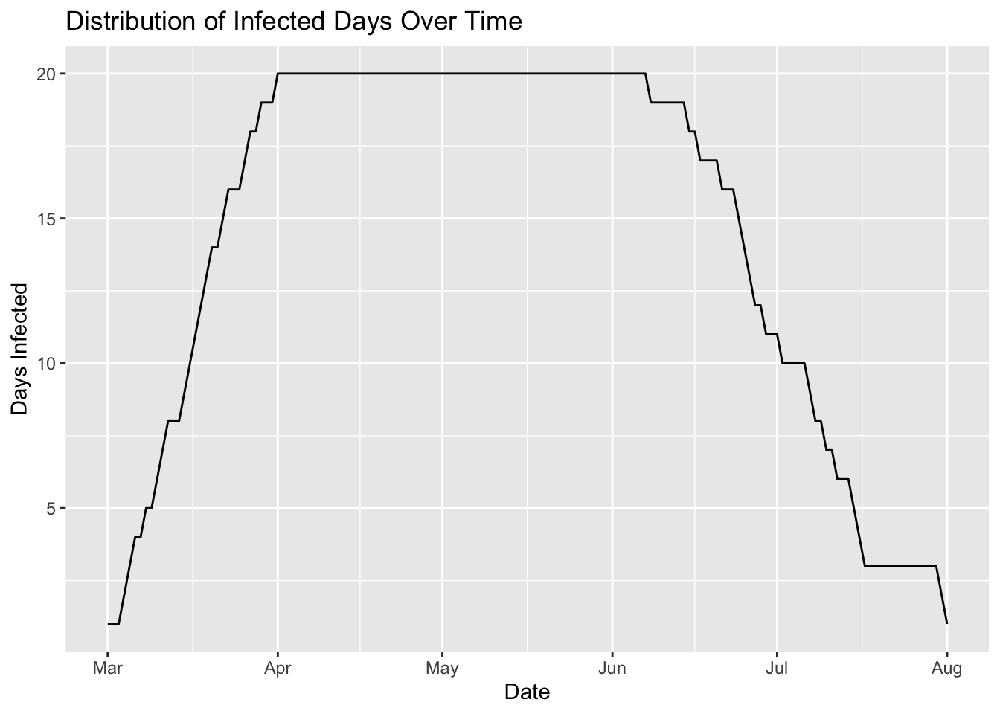

This document outlines some advanced data reshaping tasks with tidyr. Read more about dplyr here and tidyr on the tidyverse website, or in the Data Transformation chapter of R for Data Science.
tidyr is part of the core tidyverse packages, so we install and load this meta-package below.
install.packages("tidyverse")
library(tidyverse)seq()We can use the lubridate::ymd_hm() function and seq() to create a sequence of dates or datetimes.
Create a sequence of datetimes from midnight on "2020-05-01" until midnight on "2020-05-02", separated by "hour".
Use head() to look at the first and last three values in may_hours.
may_hours <- seq(lubridate::ymd_hm("__________ 0:00"),
lubridate::ymd_hm("__________ 0:00"),
by = "____")
head(may_hours, _)
head(may_hours, _)See below:
may_hours <- seq(lubridate::ymd_hm("2020-05-01 0:00"),
lubridate::ymd_hm("2020-05-02 0:00"),
by = "hour")
head(may_hours, 3)## [1] "2020-05-01 00:00:00 UTC" "2020-05-01 01:00:00 UTC"
## [3] "2020-05-01 02:00:00 UTC"head(may_hours, 3)## [1] "2020-05-01 00:00:00 UTC" "2020-05-01 01:00:00 UTC"
## [3] "2020-05-01 02:00:00 UTC"tidyr::full_seq()The tidyr::full_seq() works similar to seq()–it takes a vector (x), finds the min and max value, then generates the ‘full sequence’ of values, spaced out by the period argument.
Consider the vector c(1, 3, 8, 10, 15).
tidyr::full_seq(x = c(1, 3, 8, 10, 15), period = 1)## [1] 1 2 3 4 5 6 7 8 9 10 11 12 13 14 15Create a vector of two June dates:
jun_dates <- c(lubridate::ymd_hm("2020-__-__ __:__"),
lubridate::ymd_hm("2020-__-__ __:__"))
jun_datesSee below:
jun_dates <- c(lubridate::ymd_hm("2020-06-01 08:00"),
lubridate::ymd_hm("2020-06-01 17:00"))
jun_dates## [1] "2020-06-01 08:00:00 UTC" "2020-06-01 17:00:00 UTC"Create a full sequence of June datetimes, starting at 8am June 1, 2020 and ending at 5pm June 1, 2020. Each value should be 15 min apart.
head(
full_seq(x = ________,
period = ___)
)15 min x 60 seconds = 900 seconds.
head(
full_seq(x = jun_dates,
period = 900)
)## [1] "2020-06-01 08:00:00 UTC" "2020-06-01 08:15:00 UTC"
## [3] "2020-06-01 08:30:00 UTC" "2020-06-01 08:45:00 UTC"
## [5] "2020-06-01 09:00:00 UTC" "2020-06-01 09:15:00 UTC"We’re going to use expand_grid() and anti_join() to find the missing values in the VisitNAData data frame.
VisitNAData <- readr::read_csv(file = "https://bit.ly/36tnN55")
VisitNADataCreate a list of possible visit types ("Consult", "Lab", "Clinic", "Pharmacy") and store it in visits.
______ <- c("______", "___", "_______", "__________")See below:
visits <- c("Consult", "Lab", "Clinic", "Pharmacy")Create a data frame with all possible combinations of may_hours and visits. Name the columns date and visit_type.
FullDateVisit <- expand_grid(
date = _______,
visit_type = ________)
head(FullDateVisit)See below:
FullDateVisit <- expand_grid(
date = may_hours,
visit_type = visits)
head(FullDateVisit)Check how many missing visit_types there are with dplyr::count()
VisitNAData %>%
count(visit_type)Join the FullDateVisit to VisitNAData with an anti-join, using date and visit_type as the id.
anti_join(x = FullDateVisit,
y = ___________,
by = c("date", "visit_type"))These are the eight values that are missing from the count() output.
anti_join(x = FullDateVisit,
y = VisitNAData,
by = c("date", "visit_type"))Let’s return to our lab data from the previous exercises. Assume we have an data frame with an incomplete list of lab counts.
LabCounts <- tibble::tribble(
~lab, ~lab_count,
"Albumin", 10L,
"Potassium, Whole Blood", 8L,
"% Hemoglobin A1c", 29L)
LabCountsOne lab is missing from this list (eGFR), so we will make a vector with the known labs that are supposed to be the LabCounts data frame.
labs_list <- c("Albumin", "Potassium, Whole Blood",
"% Hemoglobin A1c", "____")
labs_listNow we have all five labs in labs_list.
labs_list <- c("Albumin", "Potassium, Whole Blood",
"% Hemoglobin A1c", "eGFR")
labs_list## [1] "Albumin" "Potassium, Whole Blood" "% Hemoglobin A1c"
## [4] "eGFR"Use complete() to fill in the missing lab_count for eGFR.
LabCounts %>%
complete(
lab = ________,
fill = list(lab_count = __))See below:
LabCounts %>%
complete(
lab = labs_list,
fill = list(lab_count = NA))Use complete() again, but use list() to make the missing lab_count values 0.
LabCounts %>%
complete(
lab = ________,
fill = list(lab_count = __))Note the L behind the 0.
LabCounts %>%
complete(
lab = labs_list,
fill = list(lab_count = 0L))We’re going to combine the use of pivot_longer(), complete(), and full_seq().
difftimeAssume we have a dataset (Infected) that contains information on 20 patients (patient), the date they became infected_date, and the date they infection cleared (recovered_date).
Infected <- read_csv("https://bit.ly/33zp4Fw")
InfectedWhat if we wanted to know the number of days between infection_start and infection_end? One way to do this is with difftime(). It takes two datetime values, and the units the differences should be in ("days")
Calculate the number of days between infection_start and infection_end in days.
Infected %>%
mutate(infected_days = difftime(time1 = _____________,
time2 = _____________,
units = "days"))See below:
Infected %>%
mutate(infected_days = difftime(time1 = infection_end,
time2 = infection_start,
units = "days"))pivot_longerThe previous example gave us the total number of days for each patient’s infection, but what if we wanted to calculate a running total of infected days for each patient? We would have to reshape the Infected dataset into a longer format.
Pivot the two date columns in the Infected dataset, assign the names to "infection_status", and the values to "date".
Infected %>%
pivot_longer(-patient,
names_to = "_____________",
values_to = "____")See below:
Infected %>%
pivot_longer(-patient,
names_to = "infection_status",
values_to = "date")completeNow that we have date and infection_status in a long format, we can start calculating the number of days between infection_start and infection_end.
Group the data by patient, then complete() the dataset:
patient to patientdate using the full_seq() function to fill in the missing days between the infection_start and infection_end datesfill argument to replace the missing values in infection_status as "infected".Infected %>%
pivot_longer(-patient,
names_to = "infection_status",
values_to = "date") %>%
group_by(_________) %>%
complete(patient = _______,
date = full_seq(____, period = 1),
fill = list(infection_status = "___________"))See below:
Infected %>%
pivot_longer(-patient,
names_to = "infection_status",
values_to = "date") %>%
group_by(patient) %>%
complete(patient = patient,
date = full_seq(date, period = 1),
fill = list(infection_status = "infected")) -> InfectedLong
InfectedLonglag()In order to calculate the running total of infected days, we’re going to combine difftime(), if_else(), and cumsum().
We’re going to start by using difftime() and lag() to calculate the difference between date and lag(x = date, n = 1).
Instead of using "days", we’re going to pass the output to as.numeric() so it’s converted to a double.
InfectedLong %>%
mutate(
day_diff0 = as.numeric(difftime(time1 = ____,
time2 = lag(x = ____,
n = 1))))See below:
InfectedLong %>%
mutate(
day_diff0 = as.numeric(difftime(time1 = date,
time2 = lag(x = date,
n = 1))))if_else()Create day_diff and use dplyr::if_else() to replace the NA in day_diff0.
dplyr::if_else() takes a logical condition, the desired result if it is true, and the desired result if it is false
InfectedLong %>%
mutate(
day_diff0 = as.numeric(difftime(time1 = date,
time2 = lag(x = date,
n = 1))),
# replace missing day_diff0 with 0, all else get day_diff0
day_diff = dplyr::if_else(condition = is.na(________),
true = _,
false = ________))See below:
InfectedLong %>%
mutate(
day_diff0 = as.numeric(difftime(time1 = date,
time2 = lag(x = date,
n = 1))),
day_diff = dplyr::if_else(condition = is.na(day_diff0),
true = 0,
false = day_diff0))No we have 0’s instead of NAs.
cumsum()Finally we have a numerical variable we can add up to get the number of days infected at each day in date. Here we will use the cumsum() function (cumulative sum) to get the running total number of days infected per patient (recall the dataset is still grouped by patient).
Create total_inf_days by getting the cumsum() of a numerically formatted day_diff column.
InfectedLong %>%
mutate(
day_diff0 = as.numeric(difftime(time1 = date,
time2 = lag(x = date,
n = 1))),
day_diff = dplyr::if_else(condition = is.na(day_diff0),
true = 0,
false = day_diff0),
_____________ = cumsum(as.numeric(________)))See below
InfectedLong %>%
mutate(
day_diff0 = as.numeric(difftime(time1 = date,
time2 = lag(x = date,
n = 1))),
day_diff = dplyr::if_else(condition = is.na(day_diff0),
true = 0,
false = day_diff0),
total_inf_days = cumsum(as.numeric(day_diff)))These last few steps are for cleaning up our InfectedLong by removing the underscore (_) from infection_status, ungrouping() the data, and dropping the intermediate day_diff0 and day_diff columns.
use stringr::str_replace_all() to remove the underscores by giving infection_status to the string argument, "_" to the pattern argument, and " " to the replacement argument
ungroup() the data
use select() to remove the
InfectedLong %>%
mutate(
day_diff0 = as.numeric(difftime(time1 = date,
time2 = lag(x = date,
n = 1))),
day_diff = dplyr::if_else(condition = is.na(day_diff0),
true = 0,
false = day_diff0),
total_inf_days = cumsum(as.numeric(day_diff)),
infection_status = str_replace_all(string = __________________,
pattern = ___,
replacement = ___)) %>%
________() %>%
select(-c(_________, _________))See below.
InfectedLong %>%
mutate(
day_diff0 = as.numeric(difftime(time1 = date,
time2 = lag(x = date,
n = 1))),
day_diff = dplyr::if_else(condition = is.na(day_diff0),
true = 0,
false = day_diff0),
total_inf_days = cumsum(as.numeric(day_diff)),
infection_status = str_replace_all(string = infection_status,
pattern = "_",
replacement = " ")) %>%
ungroup() %>%
# remove intermediate columns
select(-c(day_diff0, day_diff)) -> InfectedLong
InfectedLongNow we can count the number of times each date occurs and plot if over date.
InfectedLong %>%
count(date, name = "days_inf") %>%
ggplot(aes(x = date, y = days_inf)) +
geom_line() +
labs(x = "Date", y = "Days Infected",
title = "Distribution of Infected Days Over Time")